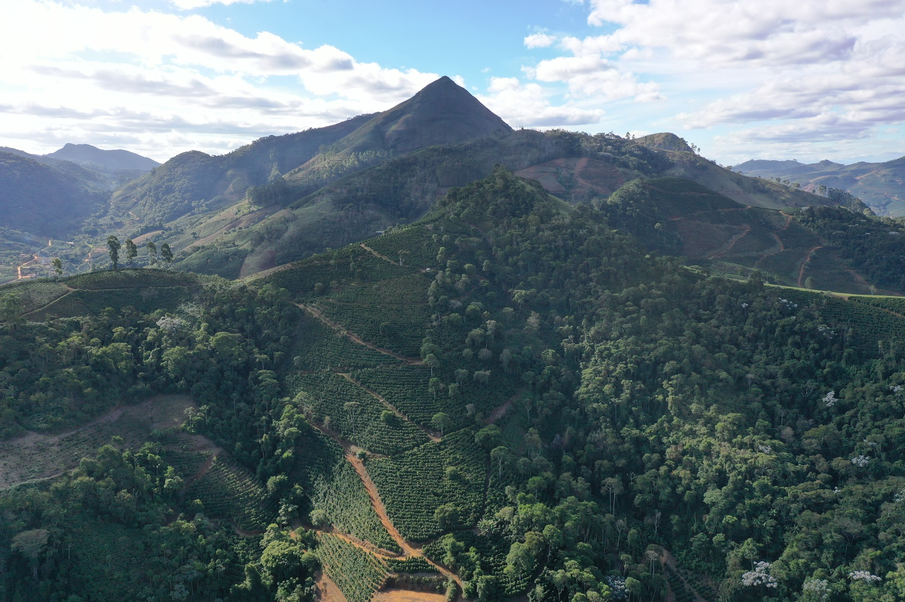
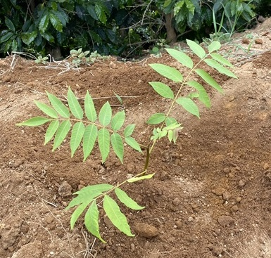

<!DOCTYPE html>
<html lang="en">
<head>
    <link rel="stylesheet" href="https://unpkg.com/leaflet@1.9.4/dist/leaflet.css" integrity="sha256-p4NxAoJBhIIN+hmNHrzRCf9tD/miZyoHS5obTRR9BMY=" crossorigin="" />
    <script src="https://unpkg.com/leaflet@1.9.4/dist/leaflet.js" integrity="sha256-20nQCchB9co0qIjJZRGuk2/Z9VM+kNiyxNV1lvTlZBo=" crossorigin=""></script>
    <link rel="stylesheet" href="Leaflet.Coordinates-master\Leaflet.Coordinates-master\dist\Leaflet.Coordinates-0.1.5.css"/>
    <link rel="stylesheet" href="Leaflet.Coordinates-master\Leaflet.Coordinates-master\dist\Leaflet.Coordinates-0.1.5.ie.css"/>
    <script src="Leaflet.Coordinates-master\Leaflet.Coordinates-master\dist\Leaflet.Coordinates-0.1.5.src.js"></script>

    
    <script src="muda.js"></script>
    <script src="waleson.js"></script>

    <style>
        #map {position: absolute; top: 0; bottom: 0; left: 0; right: 0;}
    </style>
    <meta charset="UTF-8">
    <meta name="viewport" content="width=device-width, initial-scale=1.0">
    <title>WebGIS Curu</title>
</head>
<body>
    <div id = "map"></div>
    <script>
        var map = L.map('map', { attributionControl:false}).setView([-20.031, -42.02], 17);
        var osm = L.tileLayer('https://api.maptiler.com/maps/satellite/{z}/{x}/{y}.jpg?key=up0bAfsERm51FL3XEQVL').addTo(map);

        var OpenStreetMapMapnik = L.tileLayer('https://tile.openstreetmap.org/{z}/{x}/{y}.png');

        
        // Adicionar escala

        L.control.scale({
            metric: true,
            imperial: false,
            maxWidth: 100,
            position: 'bottomleft'
        }).addTo(map);


        // Adicionar logo abaixo

        L.Control.Watermark=L.Control.extend({
            onAdd:function(map){
                var img = L.DomUtil.create('img');
                img.src = 'https://i.ibb.co/nmxPcR7/logo.png';
                img.style.width = '200px';
                return img;
                },
                onRemove:function(map){},
                });
                L.control.watermark = function(opts){
                    return new L.Control.Watermark(opts);
                    }
                L.control.watermark({position:'bottomleft'}).addTo(map);


        //Leaflet layer control   - https://leaflet-extras.github.io/leaflet-providers/preview/
        var baseMaps = {
            'Imagem': osm,
            'Open Street Map': OpenStreetMapMapnik
        }

        L.geoJSON(waleson).bindTooltip('Sítio São Vicente').addTo(map).bindPopup('<h2>Sítio São Vicente</h1><p><b>Proprietário:</b> Waleson Aparecido Loduvino Barros <br> <b>Área:</b> 5,3853 ha <br><b>Variação de altitude:</b> 800 a 990 m <br><b>Município:</b> Simonésia - Minas Gerais</p>')
        var muda = L.geoJSON(muda).bindTooltip('Cedro-rosa').addTo(map).bindPopup('<h2>Plantio de mudas - 2023</h1><p><b>Nome comum:</b> Cedro-rosa <br> <b>Nome científico:</b> <i>Cedrela fissilis </i><br><b>Função no SAF:</b> Enriquecimento da flora e produção de madeira <br></p>')
        
        var overlayMaps = {
            'Mudas 2023': muda
        }

        L.control.layers(baseMaps, overlayMaps).addTo(map);


        //Coordinates

        L.control.coordinates({
            positio:"bottomleft",
            useDMS:false,
            //labelTemplateLat:"S {y}",
            //labelTemplateLng:"W {x}",
            useLatLngOrder:true
        }).addTo(map);

    </script>
</body>
</html>
